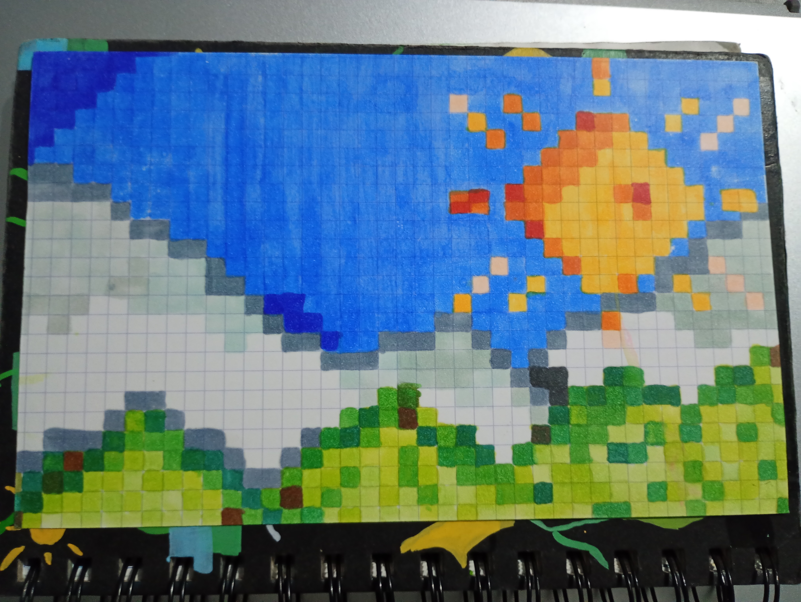
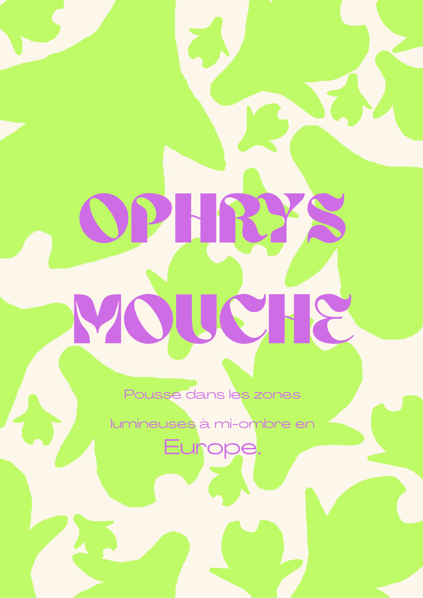

I don't know what had passed in my mind. Why I had though that it was a good idea to make pixel art by hand ??

A poster about a flower I've seen in a nature reserve : the fly orchid. It was for a school project.
I had to make som experimentation before making the poster.


Again, another highschool project ( but I really liked this one !), to understand what I have do, you need a little bit of context.
"In 2050, the season are not longer what we had knew in Ile de France (a state in France): in autumn it's raining soo much that there's practically inondations all of the time, during winter, the usual temperature is - 10 ° celcius and it's snowing, so no more electricity. During Spring, the weather is unpredictable, for four days it's raining ( a lot) , then it's really hot ( like 40° Celsius),but it's not only that. People do not know what to wear anymore, so they become sick easily. And let's not talk about the explosions of allergies...And finally, there's summer : Heatwave, heatwave and heatwave. And 40° (Celsius)"
This project worked in phase : one in group and the other one alone.
First phase : Experimentation
We had to make groups of four ( I've been adopted in one lol) and choose a season : we decided to take Spring and our teacher asked us to make samples for resolving a problematic in Spring : for example making a filter. I don't have take the picutre of them :( ).
Second phase: Imagining an object from a sample
To make it short, each sample we had made have notions : to protect from rain, multitask, filtering, etc, and I've choose multitask and imagine a hat that can protect the user from the rain, the cold and from the pollen ( due to the rise of the allergies to it).
Finally, the last phase : the story
You may had think that the next phase was to build it ? Heheheh, people, my highschool doesn't have the budget ! And that's not what my teacher ask us to do, we had to make a page where the object is used ( like a comic lol). I've made it last minute, and I had a pretty good grade lol (17/20)